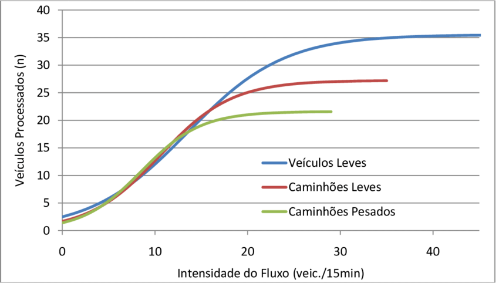
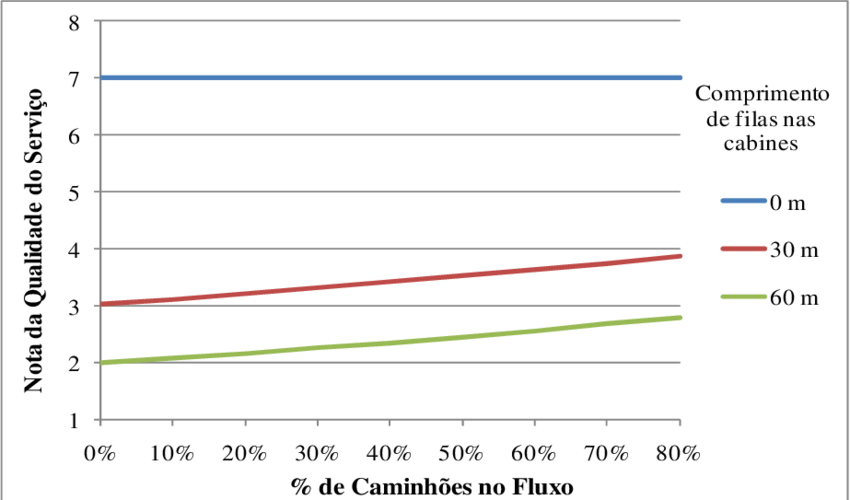

Camera 1
Pista 1 - Placa:
Pista 2 - Placa:
Pista 3 - Placa:
Pista 4 - Placa:
Falha de funcionamento sensor 7
Antena 3 e 4 - necessidade de manutenção preventiva
 
Cameras
Antenas
Sensores
Configuração de zoom
Registrar eventos
Configurações do sistema
Emergencia
Alarme Sonoro
Solicitar Assistência
USUARIO | ZOOM | DARK MODE | VOLTAR